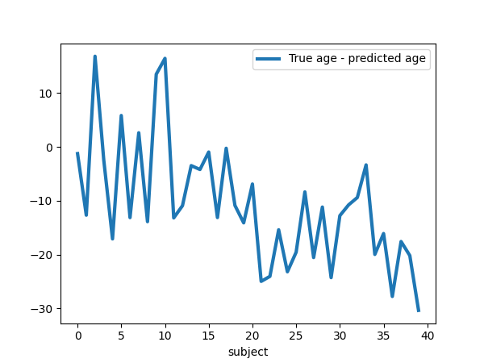

Note
Click here to download the full example code or to run this example in your browser via Binder
9.3.13. Voxel-Based Morphometry on Oasis dataset¶
This example uses Voxel-Based Morphometry (VBM) to study the relationship between aging and gray matter density.
The data come from the OASIS project. If you use it, you need to agree with the data usage agreement available on the website.
It has been run through a standard VBM pipeline (using SPM8 and NewSegment) to create VBM maps, which we study here.
9.3.13.1. Predictive modeling analysis: VBM bio-markers of aging?¶
We run a standard SVM-ANOVA nilearn pipeline to predict age from the VBM data. We use only 100 subjects from the OASIS dataset to limit the memory usage.
Note that for an actual predictive modeling study of aging, the study should be ran on the full set of subjects. Also, all parameters should be set by cross-validation. This includes the smoothing applied to the data and the number of features selected by the ANOVA step. Indeed, even these data-preparation parameter impact significantly the prediction score.
Also, parameters such as the smoothing should be applied to the data and the number of features selected by the ANOVA step should be set by nested cross-validation, as they impact significantly the prediction score.
9.3.13.2. Brain mapping with mass univariate¶
SVM weights are very noisy, partly because heavy smoothing is detrimental for the prediction here. A standard analysis using mass-univariate GLM (here permuted to have exact correction for multiple comparisons) gives a much clearer view of the important regions.
Note
If you are using Nilearn with a version older than 0.9.0,
then you should either upgrade your version or import maskers
from the input_data module instead of the maskers module.
That is, you should manually replace in the following example all occurrences of:
from nilearn.maskers import NiftiMasker
with:
from nilearn.input_data import NiftiMasker
# Authors: Elvis Dhomatob, <elvis.dohmatob@inria.fr>, Apr. 2014
# Virgile Fritsch, <virgile.fritsch@inria.fr>, Apr 2014
# Gael Varoquaux, Apr 2014
# Andres Hoyos-Idrobo, Apr 2017
import numpy as np
import matplotlib.pyplot as plt
from nilearn import datasets
from nilearn.maskers import NiftiMasker
from nilearn.image import get_data
n_subjects = 100 # more subjects requires more memory
9.3.13.3. Load Oasis dataset¶
oasis_dataset = datasets.fetch_oasis_vbm(
n_subjects=n_subjects, legacy_format=False
)
gray_matter_map_filenames = oasis_dataset.gray_matter_maps
age = oasis_dataset.ext_vars['age'].values
# Split data into training set and test set
from sklearn.model_selection import train_test_split
gm_imgs_train, gm_imgs_test, age_train, age_test = train_test_split(
gray_matter_map_filenames, age, train_size=.6, random_state=0)
# print basic information on the dataset
print('First gray-matter anatomy image (3D) is located at: %s' %
oasis_dataset.gray_matter_maps[0]) # 3D data
print('First white-matter anatomy image (3D) is located at: %s' %
oasis_dataset.white_matter_maps[0]) # 3D data
Out:
First gray-matter anatomy image (3D) is located at: /home/circleci/nilearn_data/oasis1/OAS1_0001_MR1/mwrc1OAS1_0001_MR1_mpr_anon_fslswapdim_bet.nii.gz
First white-matter anatomy image (3D) is located at: /home/circleci/nilearn_data/oasis1/OAS1_0001_MR1/mwrc2OAS1_0001_MR1_mpr_anon_fslswapdim_bet.nii.gz
9.3.13.4. Preprocess data¶
nifti_masker = NiftiMasker(
standardize=False,
smoothing_fwhm=2,
memory='nilearn_cache') # cache options
gm_maps_masked = nifti_masker.fit_transform(gm_imgs_train)
# The features with too low between-subject variance are removed using
# :class:`sklearn.feature_selection.VarianceThreshold`.
from sklearn.feature_selection import VarianceThreshold
variance_threshold = VarianceThreshold(threshold=.01)
gm_maps_thresholded = variance_threshold.fit_transform(gm_maps_masked)
# Then we convert the data back to the mask image in order to use it for
# decoding process
mask = nifti_masker.inverse_transform(variance_threshold.get_support())
Prediction pipeline with ANOVA and SVR using
nilearn.decoding.DecoderRegressor Object
# In nilearn we can benefit from the built-in DecoderRegressor object to
# do ANOVA with SVR instead of manually defining the whole pipeline.
# This estimator also uses Cross Validation to select best models and ensemble
# them. Furthermore, you can pass n_jobs=<some_high_value> to the
# DecoderRegressor class to take advantage of a multi-core system.
# To save time (because these are anat images with many voxels), we include
# only the 1-percent voxels most correlated with the age variable to fit. We
# also want to set mask hyperparameter to be the mask we just obtained above.
from nilearn.decoding import DecoderRegressor
decoder = DecoderRegressor(estimator='svr', mask=mask,
scoring='neg_mean_absolute_error',
screening_percentile=1,
n_jobs=1)
# Fit and predict with the decoder
decoder.fit(gm_imgs_train, age_train)
# Sort test data for better visualization (trend, etc.)
perm = np.argsort(age_test)[::-1]
age_test = age_test[perm]
gm_imgs_test = np.array(gm_imgs_test)[perm]
age_pred = decoder.predict(gm_imgs_test)
prediction_score = -np.mean(decoder.cv_scores_['beta'])
print("=== DECODER ===")
print("explained variance for the cross-validation: %f" % prediction_score)
print("")
Out:
=== DECODER ===
explained variance for the cross-validation: 10.670598
9.3.13.5. Visualization¶
weight_img = decoder.coef_img_['beta']
# Create the figure
from nilearn.plotting import plot_stat_map, show
bg_filename = gray_matter_map_filenames[0]
z_slice = 0
display = plot_stat_map(weight_img, bg_img=bg_filename,
display_mode='z', cut_coords=[z_slice])
display.title("SVM weights")
show()

9.3.13.6. Visualize the quality of predictions¶
plt.figure(figsize=(6, 4.5))
plt.suptitle("Decoder: Mean Absolute Error %.2f years" % prediction_score)
linewidth = 3
plt.plot(age_test, label="True age", linewidth=linewidth)
plt.plot(age_pred, '--', c="g", label="Predicted age", linewidth=linewidth)
plt.ylabel("age")
plt.xlabel("subject")
plt.legend(loc="best")
plt.figure(figsize=(6, 4.5))
plt.plot(age_test - age_pred, label="True age - predicted age",
linewidth=linewidth)
plt.xlabel("subject")
plt.legend(loc="best")

- 
Out:
<matplotlib.legend.Legend object at 0x7f32ea5d4ca0>
9.3.13.7. Inference with massively univariate model¶
print("Massively univariate model")
gm_maps_masked = NiftiMasker().fit_transform(gray_matter_map_filenames)
data = variance_threshold.fit_transform(gm_maps_masked)
# Statistical inference
from nilearn.mass_univariate import permuted_ols
neg_log_pvals, t_scores_original_data, _ = permuted_ols(
age, data, # + intercept as a covariate by default
n_perm=2000, # 1,000 in the interest of time; 10000 would be better
verbose=1, # display progress bar
n_jobs=1) # can be changed to use more CPUs
signed_neg_log_pvals = neg_log_pvals * np.sign(t_scores_original_data)
signed_neg_log_pvals_unmasked = nifti_masker.inverse_transform(
variance_threshold.inverse_transform(signed_neg_log_pvals))
# Show results
threshold = -np.log10(0.1) # 10% corrected
fig = plt.figure(figsize=(5.5, 7.5), facecolor='k')
display = plot_stat_map(signed_neg_log_pvals_unmasked, bg_img=bg_filename,
threshold=threshold, cmap=plt.cm.RdBu_r,
display_mode='z', cut_coords=[z_slice],
figure=fig)
title = ('Negative $\\log_{10}$ p-values'
'\n(Non-parametric + max-type correction)')
display.title(title, y=1.2)
n_detections = (get_data(signed_neg_log_pvals_unmasked) > threshold).sum()
print('\n%d detections' % n_detections)
show()
Out:
Massively univariate model
[Parallel(n_jobs=1)]: Using backend SequentialBackend with 1 concurrent workers.
Job #1, processed 0/2000 permutations (0.00%, 176.8803596496582 seconds remaining)
Job #1, processed 10/2000 permutations (0.50%, 37.652825117111206 seconds remaining)
Job #1, processed 20/2000 permutations (1.00%, 35.38294816017151 seconds remaining)
Job #1, processed 30/2000 permutations (1.50%, 34.6160212357839 seconds remaining)
Job #1, processed 40/2000 permutations (2.00%, 35.26302671432495 seconds remaining)
Job #1, processed 50/2000 permutations (2.50%, 34.6526985168457 seconds remaining)
Job #1, processed 60/2000 permutations (3.00%, 34.161044120788574 seconds remaining)
Job #1, processed 70/2000 permutations (3.50%, 33.85840245655605 seconds remaining)
Job #1, processed 80/2000 permutations (4.00%, 33.49880790710449 seconds remaining)
Job #1, processed 90/2000 permutations (4.50%, 33.14328302277459 seconds remaining)
Job #1, processed 100/2000 permutations (5.00%, 32.859912157058716 seconds remaining)
Job #1, processed 110/2000 permutations (5.50%, 32.61235265298323 seconds remaining)
Job #1, processed 120/2000 permutations (6.00%, 32.36305252710978 seconds remaining)
Job #1, processed 130/2000 permutations (6.50%, 32.18153278644269 seconds remaining)
Job #1, processed 140/2000 permutations (7.00%, 31.984001806804113 seconds remaining)
Job #1, processed 150/2000 permutations (7.50%, 31.76464422543844 seconds remaining)
Job #1, processed 160/2000 permutations (8.00%, 31.55151665210724 seconds remaining)
Job #1, processed 170/2000 permutations (8.50%, 31.35315446292653 seconds remaining)
Job #1, processed 180/2000 permutations (9.00%, 31.18420820766025 seconds remaining)
Job #1, processed 190/2000 permutations (9.50%, 30.987835833900856 seconds remaining)
Job #1, processed 200/2000 permutations (10.00%, 30.785985231399536 seconds remaining)
Job #1, processed 210/2000 permutations (10.50%, 30.587028162819998 seconds remaining)
Job #1, processed 220/2000 permutations (11.00%, 30.39087464592674 seconds remaining)
Job #1, processed 230/2000 permutations (11.50%, 30.192805580470875 seconds remaining)
Job #1, processed 240/2000 permutations (12.00%, 30.002585252126057 seconds remaining)
Job #1, processed 250/2000 permutations (12.50%, 29.818776607513428 seconds remaining)
Job #1, processed 260/2000 permutations (13.00%, 29.637123529727642 seconds remaining)
Job #1, processed 270/2000 permutations (13.50%, 29.46393448335153 seconds remaining)
Job #1, processed 280/2000 permutations (14.00%, 29.29219286782401 seconds remaining)
Job #1, processed 290/2000 permutations (14.50%, 29.112483698746253 seconds remaining)
Job #1, processed 300/2000 permutations (15.00%, 28.930089791615806 seconds remaining)
Job #1, processed 310/2000 permutations (15.50%, 28.747094415849254 seconds remaining)
Job #1, processed 320/2000 permutations (16.00%, 28.56769573688507 seconds remaining)
Job #1, processed 330/2000 permutations (16.50%, 28.38795799920053 seconds remaining)
Job #1, processed 340/2000 permutations (17.00%, 28.209140497095447 seconds remaining)
Job #1, processed 350/2000 permutations (17.50%, 28.038054636546544 seconds remaining)
Job #1, processed 360/2000 permutations (18.00%, 27.86204467879401 seconds remaining)
Job #1, processed 370/2000 permutations (18.50%, 27.69067165013906 seconds remaining)
Job #1, processed 380/2000 permutations (19.00%, 27.51390876268086 seconds remaining)
Job #1, processed 390/2000 permutations (19.50%, 27.34779698420794 seconds remaining)
Job #1, processed 400/2000 permutations (20.00%, 27.182621002197266 seconds remaining)
Job #1, processed 410/2000 permutations (20.50%, 27.013670770133412 seconds remaining)
Job #1, processed 420/2000 permutations (21.00%, 26.850109293347312 seconds remaining)
Job #1, processed 430/2000 permutations (21.50%, 26.67550327057062 seconds remaining)
Job #1, processed 440/2000 permutations (22.00%, 26.498548832806673 seconds remaining)
Job #1, processed 450/2000 permutations (22.50%, 26.318198601404827 seconds remaining)
Job #1, processed 460/2000 permutations (23.00%, 26.142525838769004 seconds remaining)
Job #1, processed 470/2000 permutations (23.50%, 25.989233159004375 seconds remaining)
Job #1, processed 480/2000 permutations (24.00%, 25.84099006652832 seconds remaining)
Job #1, processed 490/2000 permutations (24.50%, 25.680435706158075 seconds remaining)
Job #1, processed 500/2000 permutations (25.00%, 25.520087242126465 seconds remaining)
Job #1, processed 510/2000 permutations (25.50%, 25.355208593256332 seconds remaining)
Job #1, processed 520/2000 permutations (26.00%, 25.18807176443247 seconds remaining)
Job #1, processed 530/2000 permutations (26.50%, 25.02640245545585 seconds remaining)
Job #1, processed 540/2000 permutations (27.00%, 24.864209042655098 seconds remaining)
Job #1, processed 550/2000 permutations (27.50%, 24.700765869834203 seconds remaining)
Job #1, processed 560/2000 permutations (28.00%, 24.540955679757257 seconds remaining)
Job #1, processed 570/2000 permutations (28.50%, 24.374680376889412 seconds remaining)
Job #1, processed 580/2000 permutations (29.00%, 24.206998487998696 seconds remaining)
Job #1, processed 590/2000 permutations (29.50%, 24.04103326393386 seconds remaining)
Job #1, processed 600/2000 permutations (30.00%, 23.874547878901165 seconds remaining)
Job #1, processed 610/2000 permutations (30.50%, 23.708173083477334 seconds remaining)
Job #1, processed 620/2000 permutations (31.00%, 23.54042243957519 seconds remaining)
Job #1, processed 630/2000 permutations (31.50%, 23.3733222030458 seconds remaining)
Job #1, processed 640/2000 permutations (32.00%, 23.209599435329437 seconds remaining)
Job #1, processed 650/2000 permutations (32.50%, 23.041411564900326 seconds remaining)
Job #1, processed 660/2000 permutations (33.00%, 22.872735196893863 seconds remaining)
Job #1, processed 670/2000 permutations (33.50%, 22.70313719137391 seconds remaining)
Job #1, processed 680/2000 permutations (34.00%, 22.53200193012462 seconds remaining)
Job #1, processed 690/2000 permutations (34.50%, 22.358975590139195 seconds remaining)
Job #1, processed 700/2000 permutations (35.00%, 22.18476370402745 seconds remaining)
Job #1, processed 710/2000 permutations (35.50%, 22.01338848261766 seconds remaining)
Job #1, processed 720/2000 permutations (36.00%, 21.842837015787758 seconds remaining)
Job #1, processed 730/2000 permutations (36.50%, 21.671563909478383 seconds remaining)
Job #1, processed 740/2000 permutations (37.00%, 21.501904732472187 seconds remaining)
Job #1, processed 750/2000 permutations (37.50%, 21.331293185551964 seconds remaining)
Job #1, processed 760/2000 permutations (38.00%, 21.16439612288224 seconds remaining)
Job #1, processed 770/2000 permutations (38.50%, 21.000870782059508 seconds remaining)
Job #1, processed 780/2000 permutations (39.00%, 20.83242302063184 seconds remaining)
Job #1, processed 790/2000 permutations (39.50%, 20.662192712856243 seconds remaining)
Job #1, processed 800/2000 permutations (40.00%, 20.49408531188965 seconds remaining)
Job #1, processed 810/2000 permutations (40.50%, 20.323877040250803 seconds remaining)
Job #1, processed 820/2000 permutations (41.00%, 20.150605387803985 seconds remaining)
Job #1, processed 830/2000 permutations (41.50%, 19.978989523577404 seconds remaining)
Job #1, processed 840/2000 permutations (42.00%, 19.806853067307244 seconds remaining)
Job #1, processed 850/2000 permutations (42.50%, 19.63412568148445 seconds remaining)
Job #1, processed 860/2000 permutations (43.00%, 19.460097845210584 seconds remaining)
Job #1, processed 870/2000 permutations (43.50%, 19.288220452166154 seconds remaining)
Job #1, processed 880/2000 permutations (44.00%, 19.116728956049137 seconds remaining)
Job #1, processed 890/2000 permutations (44.50%, 18.94652942057406 seconds remaining)
Job #1, processed 900/2000 permutations (45.00%, 18.77620437410143 seconds remaining)
Job #1, processed 910/2000 permutations (45.50%, 18.604766431745592 seconds remaining)
Job #1, processed 920/2000 permutations (46.00%, 18.435407794040184 seconds remaining)
Job #1, processed 930/2000 permutations (46.50%, 18.268575081261258 seconds remaining)
Job #1, processed 940/2000 permutations (47.00%, 18.0984828269228 seconds remaining)
Job #1, processed 950/2000 permutations (47.50%, 17.928065187052677 seconds remaining)
Job #1, processed 960/2000 permutations (48.00%, 17.75751153628031 seconds remaining)
Job #1, processed 970/2000 permutations (48.50%, 17.586712382503393 seconds remaining)
Job #1, processed 980/2000 permutations (49.00%, 17.414828217759425 seconds remaining)
Job #1, processed 990/2000 permutations (49.50%, 17.243979396242082 seconds remaining)
Job #1, processed 1000/2000 permutations (50.00%, 17.074899911880493 seconds remaining)
Job #1, processed 1010/2000 permutations (50.50%, 16.903414483117587 seconds remaining)
Job #1, processed 1020/2000 permutations (51.00%, 16.72962722123838 seconds remaining)
Job #1, processed 1030/2000 permutations (51.50%, 16.55755234690546 seconds remaining)
Job #1, processed 1040/2000 permutations (52.00%, 16.385155237638035 seconds remaining)
Job #1, processed 1050/2000 permutations (52.50%, 16.213136672973633 seconds remaining)
Job #1, processed 1060/2000 permutations (53.00%, 16.04503792186953 seconds remaining)
Job #1, processed 1070/2000 permutations (53.50%, 15.875662170837973 seconds remaining)
Job #1, processed 1080/2000 permutations (54.00%, 15.705042839050293 seconds remaining)
Job #1, processed 1090/2000 permutations (54.50%, 15.53181333279391 seconds remaining)
Job #1, processed 1100/2000 permutations (55.00%, 15.35895772413774 seconds remaining)
Job #1, processed 1110/2000 permutations (55.50%, 15.185886069461032 seconds remaining)
Job #1, processed 1120/2000 permutations (56.00%, 15.013500349862234 seconds remaining)
Job #1, processed 1130/2000 permutations (56.50%, 14.840945239615651 seconds remaining)
Job #1, processed 1140/2000 permutations (57.00%, 14.667781056019297 seconds remaining)
Job #1, processed 1150/2000 permutations (57.50%, 14.495236085808795 seconds remaining)
Job #1, processed 1160/2000 permutations (58.00%, 14.322490922335922 seconds remaining)
Job #1, processed 1170/2000 permutations (58.50%, 14.149430411493677 seconds remaining)
Job #1, processed 1180/2000 permutations (59.00%, 13.976800130585493 seconds remaining)
Job #1, processed 1190/2000 permutations (59.50%, 13.805816618334346 seconds remaining)
Job #1, processed 1200/2000 permutations (60.00%, 13.635117530822754 seconds remaining)
Job #1, processed 1210/2000 permutations (60.50%, 13.46401390950542 seconds remaining)
Job #1, processed 1220/2000 permutations (61.00%, 13.291851798041924 seconds remaining)
Job #1, processed 1230/2000 permutations (61.50%, 13.119375610739235 seconds remaining)
Job #1, processed 1240/2000 permutations (62.00%, 12.947138171042166 seconds remaining)
Job #1, processed 1250/2000 permutations (62.50%, 12.774868869781494 seconds remaining)
Job #1, processed 1260/2000 permutations (63.00%, 12.602578851911757 seconds remaining)
Job #1, processed 1270/2000 permutations (63.50%, 12.430893229687307 seconds remaining)
Job #1, processed 1280/2000 permutations (64.00%, 12.259326919913292 seconds remaining)
Job #1, processed 1290/2000 permutations (64.50%, 12.087431125862654 seconds remaining)
Job #1, processed 1300/2000 permutations (65.00%, 11.916813391905563 seconds remaining)
Job #1, processed 1310/2000 permutations (65.50%, 11.745387969126227 seconds remaining)
Job #1, processed 1320/2000 permutations (66.00%, 11.573966084104596 seconds remaining)
Job #1, processed 1330/2000 permutations (66.50%, 11.404215766074962 seconds remaining)
Job #1, processed 1340/2000 permutations (67.00%, 11.233748226023431 seconds remaining)
Job #1, processed 1350/2000 permutations (67.50%, 11.06394452518887 seconds remaining)
Job #1, processed 1360/2000 permutations (68.00%, 10.894242791568532 seconds remaining)
Job #1, processed 1370/2000 permutations (68.50%, 10.723085246817039 seconds remaining)
Job #1, processed 1380/2000 permutations (69.00%, 10.551656764486562 seconds remaining)
Job #1, processed 1390/2000 permutations (69.50%, 10.38064800921104 seconds remaining)
Job #1, processed 1400/2000 permutations (70.00%, 10.20959288733346 seconds remaining)
Job #1, processed 1410/2000 permutations (70.50%, 10.038106818571158 seconds remaining)
Job #1, processed 1420/2000 permutations (71.00%, 9.867020815191134 seconds remaining)
Job #1, processed 1430/2000 permutations (71.50%, 9.696370484945657 seconds remaining)
Job #1, processed 1440/2000 permutations (72.00%, 9.525063077608744 seconds remaining)
Job #1, processed 1450/2000 permutations (72.50%, 9.354008913040161 seconds remaining)
Job #1, processed 1460/2000 permutations (73.00%, 9.183412626998065 seconds remaining)
Job #1, processed 1470/2000 permutations (73.50%, 9.013346357410457 seconds remaining)
Job #1, processed 1480/2000 permutations (74.00%, 8.843237606254784 seconds remaining)
Job #1, processed 1490/2000 permutations (74.50%, 8.673077349694783 seconds remaining)
Job #1, processed 1500/2000 permutations (75.00%, 8.50228961308797 seconds remaining)
Job #1, processed 1510/2000 permutations (75.50%, 8.33144432345763 seconds remaining)
Job #1, processed 1520/2000 permutations (76.00%, 8.160960448415656 seconds remaining)
Job #1, processed 1530/2000 permutations (76.50%, 7.990462286020416 seconds remaining)
Job #1, processed 1540/2000 permutations (77.00%, 7.81978423564465 seconds remaining)
Job #1, processed 1550/2000 permutations (77.50%, 7.651123939021942 seconds remaining)
Job #1, processed 1560/2000 permutations (78.00%, 7.480579859171158 seconds remaining)
Job #1, processed 1570/2000 permutations (78.50%, 7.309838987459802 seconds remaining)
Job #1, processed 1580/2000 permutations (79.00%, 7.13905413241326 seconds remaining)
Job #1, processed 1590/2000 permutations (79.50%, 6.968821071228891 seconds remaining)
Job #1, processed 1600/2000 permutations (80.00%, 6.7989219427108765 seconds remaining)
Job #1, processed 1610/2000 permutations (80.50%, 6.628593441862497 seconds remaining)
Job #1, processed 1620/2000 permutations (81.00%, 6.458286270683194 seconds remaining)
Job #1, processed 1630/2000 permutations (81.50%, 6.288177099695966 seconds remaining)
Job #1, processed 1640/2000 permutations (82.00%, 6.118120961072968 seconds remaining)
Job #1, processed 1650/2000 permutations (82.50%, 5.947820316661488 seconds remaining)
Job #1, processed 1660/2000 permutations (83.00%, 5.778042155576039 seconds remaining)
Job #1, processed 1670/2000 permutations (83.50%, 5.607894462025808 seconds remaining)
Job #1, processed 1680/2000 permutations (84.00%, 5.438037690662202 seconds remaining)
Job #1, processed 1690/2000 permutations (84.50%, 5.2679537964995795 seconds remaining)
Job #1, processed 1700/2000 permutations (85.00%, 5.097749906427721 seconds remaining)
Job #1, processed 1710/2000 permutations (85.50%, 4.927529093814872 seconds remaining)
Job #1, processed 1720/2000 permutations (86.00%, 4.757374502891718 seconds remaining)
Job #1, processed 1730/2000 permutations (86.50%, 4.587463977019911 seconds remaining)
Job #1, processed 1740/2000 permutations (87.00%, 4.417462579135237 seconds remaining)
Job #1, processed 1750/2000 permutations (87.50%, 4.247409241540091 seconds remaining)
Job #1, processed 1760/2000 permutations (88.00%, 4.077150366523049 seconds remaining)
Job #1, processed 1770/2000 permutations (88.50%, 3.9069662107586187 seconds remaining)
Job #1, processed 1780/2000 permutations (89.00%, 3.7369838269908775 seconds remaining)
Job #1, processed 1790/2000 permutations (89.50%, 3.5669036577533744 seconds remaining)
Job #1, processed 1800/2000 permutations (90.00%, 3.3969374497731524 seconds remaining)
Job #1, processed 1810/2000 permutations (90.50%, 3.2268350374632777 seconds remaining)
Job #1, processed 1820/2000 permutations (91.00%, 3.056788358059558 seconds remaining)
Job #1, processed 1830/2000 permutations (91.50%, 2.8867056487036535 seconds remaining)
Job #1, processed 1840/2000 permutations (92.00%, 2.716782113780146 seconds remaining)
Job #1, processed 1850/2000 permutations (92.50%, 2.5467973206494308 seconds remaining)
Job #1, processed 1860/2000 permutations (93.00%, 2.376900895949333 seconds remaining)
Job #1, processed 1870/2000 permutations (93.50%, 2.2071998922582616 seconds remaining)
Job #1, processed 1880/2000 permutations (94.00%, 2.03755210815592 seconds remaining)
Job #1, processed 1890/2000 permutations (94.50%, 1.867626313809995 seconds remaining)
Job #1, processed 1900/2000 permutations (95.00%, 1.6977440808948716 seconds remaining)
Job #1, processed 1910/2000 permutations (95.50%, 1.52785205466585 seconds remaining)
Job #1, processed 1920/2000 permutations (96.00%, 1.358012040456136 seconds remaining)
Job #1, processed 1930/2000 permutations (96.50%, 1.1882007616171564 seconds remaining)
Job #1, processed 1940/2000 permutations (97.00%, 1.0184000251219445 seconds remaining)
Job #1, processed 1950/2000 permutations (97.50%, 0.8487368302467542 seconds remaining)
Job #1, processed 1960/2000 permutations (98.00%, 0.6789655636767952 seconds remaining)
Job #1, processed 1970/2000 permutations (98.50%, 0.5091811848170866 seconds remaining)
Job #1, processed 1980/2000 permutations (99.00%, 0.3394322058167121 seconds remaining)
Job #1, processed 1990/2000 permutations (99.50%, 0.16971546681083027 seconds remaining)
[Parallel(n_jobs=1)]: Done 1 out of 1 | elapsed: 33.9s finished
1944 detections
Total running time of the script: ( 0 minutes 54.559 seconds)
Estimated memory usage: 1902 MB